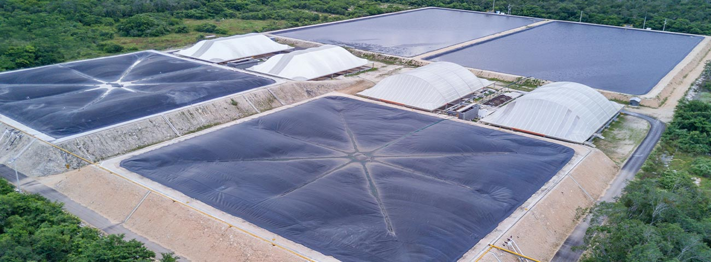

Proceso completo de upgrading basado en absorción química con aminas, operando en ciclo cerrado. Maximiza la eficiencia de separación, reduce el consumo de químicos y entrega biometano con especificaciones de gas natural.

Captura selectiva de CO₂ y H₂S por contacto líquido-gas con aminas.
Liberación de impurezas y recuperación del solvente para reuso continuo.
PLC/SCADA con sensores en línea de presión, temperatura, caudal y composición.
Dimensionamiento, balances de proceso, ingeniería básica y de detalle.
Procura, fabricación de skids, montaje y pruebas en sitio.
Calibración, operación inicial asistida y capacitación.
Servicio continuo o por contrato según necesidad del cliente.
Cada planta se diseña al sustrato, caudal y aplicación. Te entregamos una ficha técnica preliminar para tu proyecto.